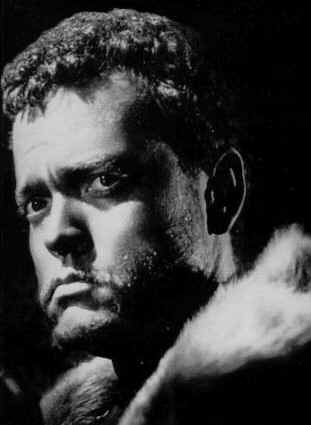

OTHELLO A-, B+US/1952/BW/FULLSCREEN 1.33:1/MONO/96 MINUTES/DIRECTED BY ORSON WELLES/STARRING ORSON WELLES/MICHAEL MACLIAMOR/VOYAGER/ AUDIO COMMENTARY/SUPPLEMENTALS/53 CHAPS/CAV-CLV/$99.95 Want to be daring? Try watching Othello without the sound. The assembly of magnificent compositions that Welles has put together for his Othello is nothing short of astounding. Welles finds angles where they never existed before and extracts from the text, so elegant in word, a visual power unmatched by other Shakespearean movies. The heritage from Citizen Kane to Touch of Evil is evident in this stylistic tour-de-force. Welles is an imposing Othello.  Painted with shadows and light, Welles moves regally through the castle sets and strides powerfully along the beach or atop the ramparts. As Iago, Michael Mac Liammoir, the Irish stage actor, is quite creepy. His vast stage experience perhaps affects his performance in front of the camera too much, but the result is highly effective under Welles' guiding camera and brilliant editing.This Othello has been condensed down to little more than an hour and a half by Welles, but the effect is to concentrate the power and force of the text. Watching the director think on his feet to distill this wonderful Shakespeare adaptation is joy enough, but the play's the thing and indeed this film rendition of Othello reigns supreme. There are substantial extras provided in this Criterion Collection edition. Foremost is a second audio commentary on analog track 2 in which Peter Bogdanovich, Myron Meisel, and Russ Lees provide sometimes insight into the filmmaking process and at other times simply describe what we can see on the screen. True, there are different prospectives from the three commentators, Bogdanovich the filmmaker, Meisel, a Welles scholar, and Lees a playwright, which is a definite plus. There is also a short directed by Mac Liammoir called Return to Glennascaul which stars Welles, excerpts from an Italian documentary Rosabella and some interesting comparisons of various filmings of Othello's classic murder scene. Visually, this is a very handsome disc. The sound, on the other hand, is dismal. It's not the fault of the transfer. That's the surviving sound we have from this Welle's masterpiece. Shot on a minuscule budget scratched together from the salaries paid Welles from his lucrative acting gigs, the production stretched over several years and the result is lots of poor dubbing and difficulties on capturing the dialogue during the shoot. Welles even dubbed most of Robert Coote's Roderigo with his own voice. Still, the power of the visual images dominates the disc. All the subtleties of the shadowy photography are accurately transferred to disc. The entire laser disc production of Othello is commendable and continues the fine tradition of Voyager's dedication to film. |